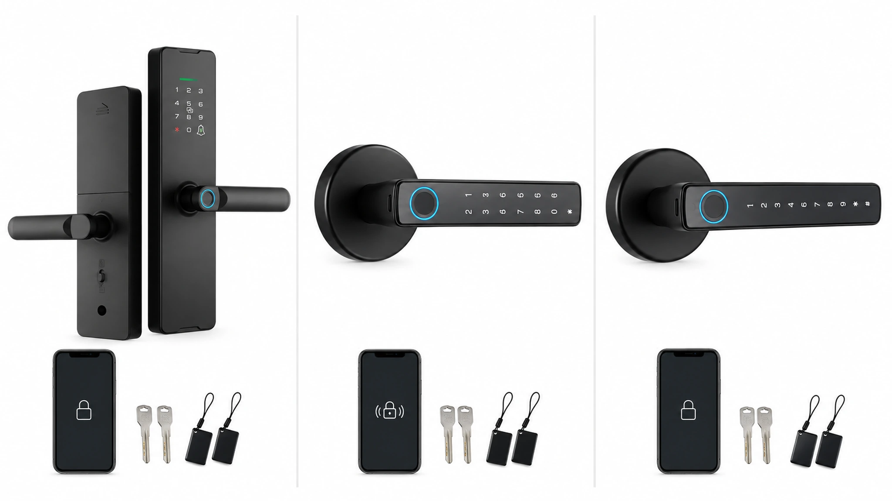
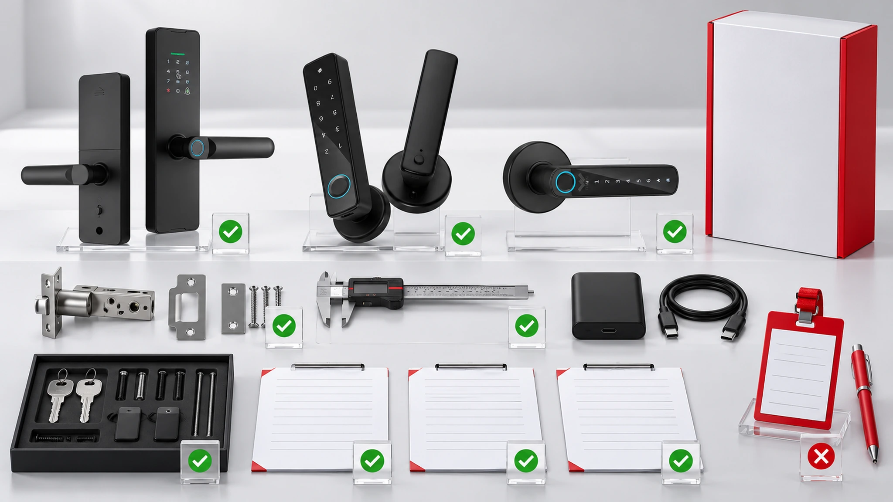
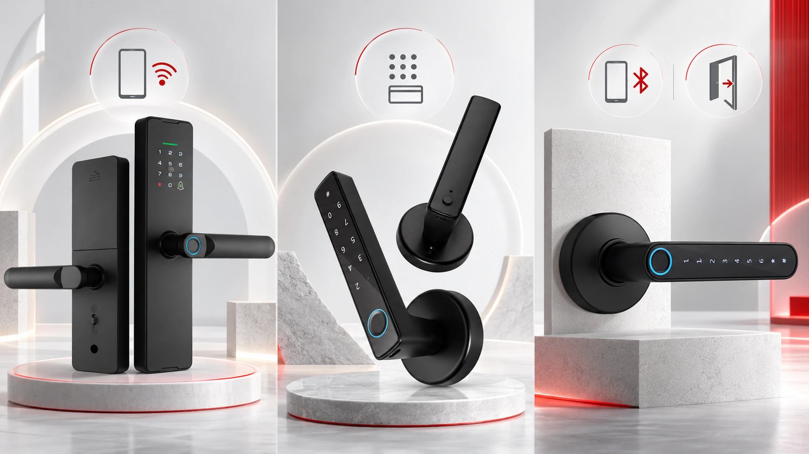

比较完整的运行配置，而不仅是单价。每个型号、配件、软件和安装条件均应在审批前确认。
有价值的成本比较会先分开已确认型号事实和项目假设，再把门体处理、安装、支持、网络工作和运营责任纳入评估。
1. 先划定决策边界
比较价格前，先写清门型、门厚、方向、位置、使用频率、用户、凭证方式、网络要求、应急流程和支持负责人。把需求分成必须具备、优先考虑和项目确认项。
决策边界能避免低单价掩盖锁体、网关、服务流程或安装预留缺失的问题，也让采购和工程团队能以同一标准判断哪些条件必须通过样品验证。
2. 把市场数据当作背景
报告提供的中国 2026 年 9 月线上市场数据只代表其统计口径，不能直接代表 WAFU 型号的全球项目价格，也不能预测酒店改造报价。引用时应说明比较的是零售还是 B2B，以及包含哪些成本。

引用市场数据时保留统计日期、渠道和口径。零售对比往往不包含门体处理、安装、软件管理、培训、备件和售后支持，而这些才是项目报价的重要组成。
3. 比较真实配置
WF-X8 可评估 Wi-Fi、Tuya Smart 或 Smart Life、指纹、密码、卡片、App、机械钥匙和 Type-C 应急供电。WF-F8 是蓝牙执手锁候选，WF-016 面向蓝牙 App、动态密码和轻改造场景。除非项目文件明确确认，不要添加 PMS、API、Mobile Key、认证、电池寿命、MOQ 或节省比例。

每一项比较结论都应标记为已确认、待核实或不包含。不能因为 App 名称、行业常用词或竞品功能，就推断报价中的 WAFU 配置具备同等能力。
4. 核对门体和安装条件
比较实际门厚、方向、门框空间、现有开孔、表面状态以及环境。一个项目包含多种门体时，应要求代表性样品，并记录工具、调校、电池或充电位置及更换时间。
存在多种门体时，应优先用最复杂的代表性门位验证，不要假设所有门都使用同一安装方法。记录工具、调校、电池或充电位置、更换时间及影响报价的现场条件。
5. 明确凭证与联网范围
要求供应商说明凭证如何创建、发送、生效、失效和撤销。WF-X8 要确认 Wi-Fi 和 App 操作；WF-F8 要测试蓝牙以及动态或临时密码路径；WF-016 在没有项目证据时只保持在已确认范围内。
凭证规则应明确账号负责人、审批路径、异常处理人和断网时的预期行为。只有这些责任写清后，流程才适合进入审批。
6. 审查证据与样品
要求型号级资料、锁体图、配件清单、App 或软件范围、安装说明和样品验收标准。将样品与报价逐行对照。

将样品、配件和软件范围逐项对照报价。为已安装门位拍照，并记录实际完成的凭证和恢复测试，以及失败项和待关闭责任人。
7. 计算项目总成本
项目总成本包括锁体、配件、样品运输、安装、门体处理、网关或网络工作、培训、备件、电池或充电、软件管理和售后支持。
在每一项成本旁写明假设。待确认接口、特殊门体处理和未完成的合规审查应作为项目预留显示，不能按零成本处理。
8. 采购清单
准确型号、外观、锁体和配件应写明；门体条件和代表性样品结果应附上；凭证、联网、应急和支持流程应记录，并指定变更控制和验收负责人。
采购清单既用于报价评审，也用于量产或安装放行前复核。它应形成可追溯的配置、样品记录和每个待确认问题的负责人。
9. 提交报价评审
提交目标门型、市场、凭证流程、网络要求、数量和样品要求，获取型号级比较。
请提供目标市场、门型、目标凭证流程、联网假设、数量和样品要求。最终比较应保持型号级，并清楚列出仍需书面确认的事项。
提交项目评估
请提供门型、权限流程、网络要求和预计数量，便于进行型号级项目评估。